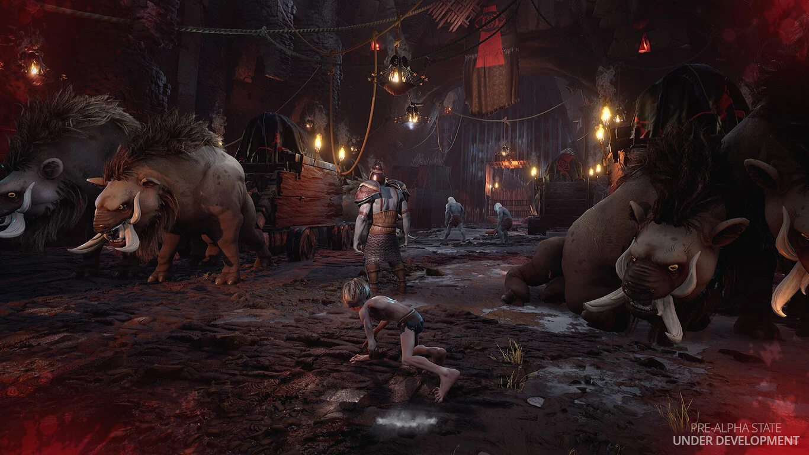

The Lord of the Rings Gollum
Proximamente
PS5, PS4, Xbox Series, Xbox One, Nintendo y PC
Historia


Jugabilidad y modos de juego
Parkour

A la hora de movernos por los diferentes escenarios Gollum tiene acceso a técnicas de sigilo y movimientos que el estudio alemán ha comparado con el parkour, y lo cierto es que el personaje se presta a movimientos felinos y pasar desapercibido será cada vez menos opcional: en cuanto se descubra en Mordor que un portador de Anillo de Poder se encuentra merodeando por sus terreros, la prioridad de los ejércitos del Señor Oscuro pasará a ser atraparlo.
Personalidad

En The Lord of the Rings: Gollum se nos plantea una situacion interesante que redondea al personaje: en función de nuestra manera de actuar y qué alternativas escojamos durante la aventura daremos forma a la personalidad de Gollum, promoviendo que seamos un ser más razonable o dejándonos llevar por la corrupción y la oscuridad.
Aventura

El juego se trata de una aventura para un solo jugador ambientada en lugares conocidos y jamás mostrados de la Tierra Media, incluyendo amplias zonas forestales, retorcidas cavernas e imponentes fortalezas convenientemente custodiadas. Y no es para menos: mientras avanzamos se fragua una gran guerra.
Trama

El videojuego nos pondra en la piel del protagonista Gollum mientras el anillo se apodera de su vida, empujandolo hacia la locura. El juego esta ubicado entre el tiempo en el que Gollum encontro el anillo y el inicio de la trilogia “El señor de los anillos”
Personajes

GOLLUM.
Vigoroso y agil, sigiloso y astuto. Puede hacer parkour y treparse de lugares impensados, pero tiene un problema, su personalidad.

GANDALF EL GRIS.
Temerario mago y una de las personalidades mas relevantes de la Tierra media.

LA BOCA DE SAURON.
Es quien desde desde Barad-dûr inicio su propia busqueda del anillo de Poder.

THRANDUIL.
El rey de los elfos silvanos y un personaje de los mas importantes de la Tierra media.

GALADRIEL.
posee muchos poderes mágicos como, poder de comunicarse a lo largo de grandes distancias, predecir el futuro, e incluso ocultar su mente de seres poderosos.

LEGOLAS.
Es un elfo con pelo rubio, siempre carga su arco y unos cuchillos élficos, es un gran cazador no un guerrero.

BOROMIR.
De los mejores capitanes de Gondor, portaba un cuerno del que se decía que su sonido atemorizaba a los enemigos, destaca por su fuerza y animo.

GIMLI.
Enano muy respetado en la Tierra Media, conocido por su habilidad con el hacha, utilizado hachas para lanzar a distancia, Estas hachas tenian mucho daño.